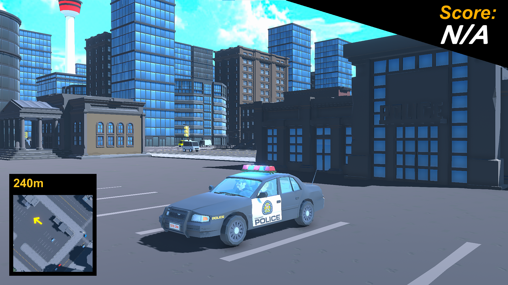

Muffin Fight
A multiplayer VR game about cooking muffins and throwing them at your friends.
It features a large social space to organize matches and various game modes.
My role on the project changed over time. For the initial development,
I acted as a mentor for the developers working on it.
For a later update, I worked on the networking.
Youthlink Cybersecurity
Developed a multi-mode presentation app designed for museum settings.
The app includes a presenter version for creating
and facilitating interactive presentations, customizing game content,
and viewing presentation analytics. The audience version offers two modes:
a public mode for free gameplay and a presentation mode where users engage
with content controlled by the presenter.


Social VR
Social VR is a multiplayer VR social space.
It was never released and was an exploration project.
The app featured customizable avatars, a functioning whiteboard,
and a ping-pong table. I was the lead developer on this project
and worked with an artist for the environment.
TEAL
TEAL was my first VR project.
It is a large industrial training simulation with over 70 steps
and realistic interactions and immersion. The goal of the project
was to provide a safe environment for workers to learn a potentially
explosive operation. My role on the project was developer
and I worked on the step system, animations, and VR interactions.


Zuldaxx
A battle royale FPS set in Egypt. Players enter a real-life plaza in
Cairo, Egypt and fight for survival. Features include healing zones,
a quickly shrinking sandstorm, and portals for a quick escape.
Smile It's Healthy
A contract project for a client in Kansas, USA. This is an
Android and iOS game developed in Unity to support
a new business called Smile It's Healthy.
It features a number of tools used to complete a series of dental tasks.
Each tool has a real-life use and the game seeks to teach young players
about dental health.